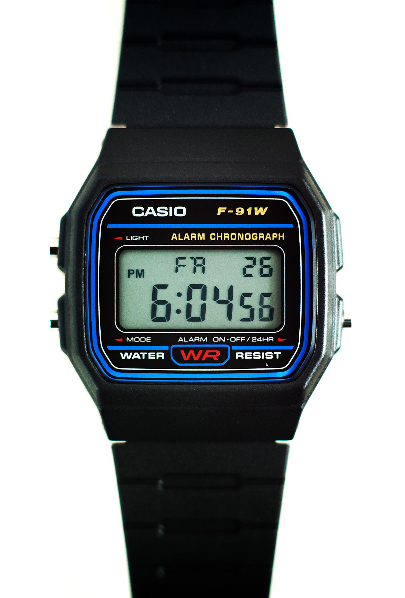
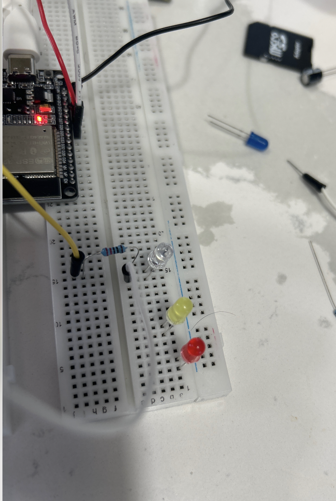
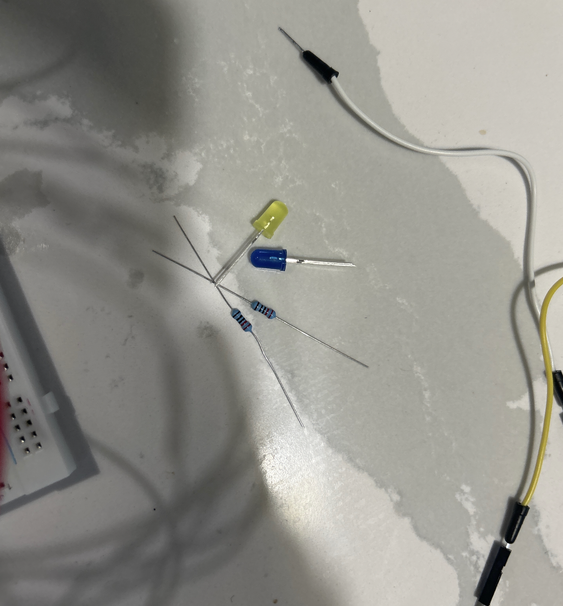
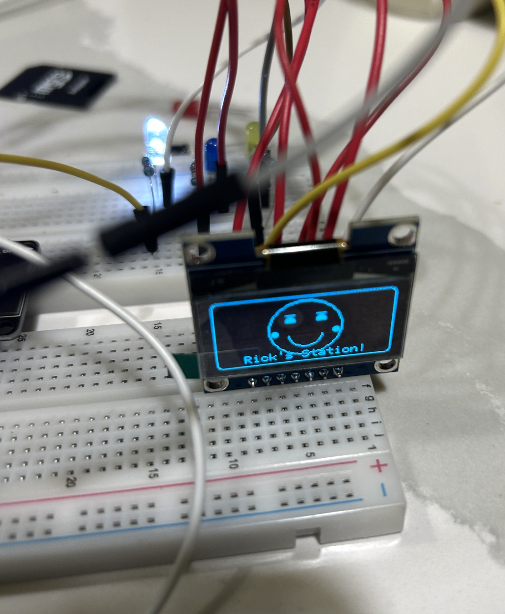
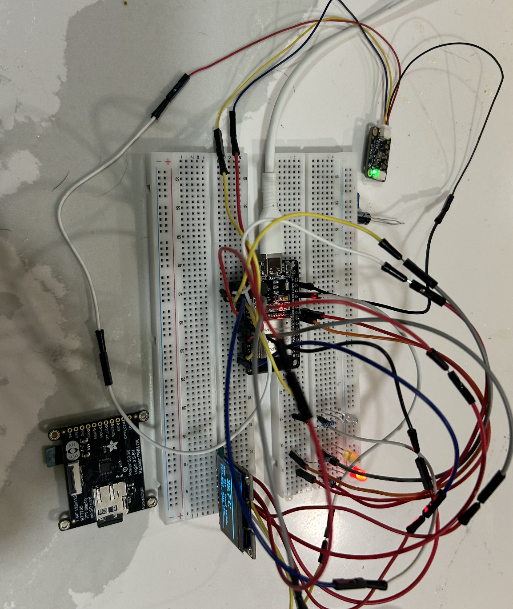
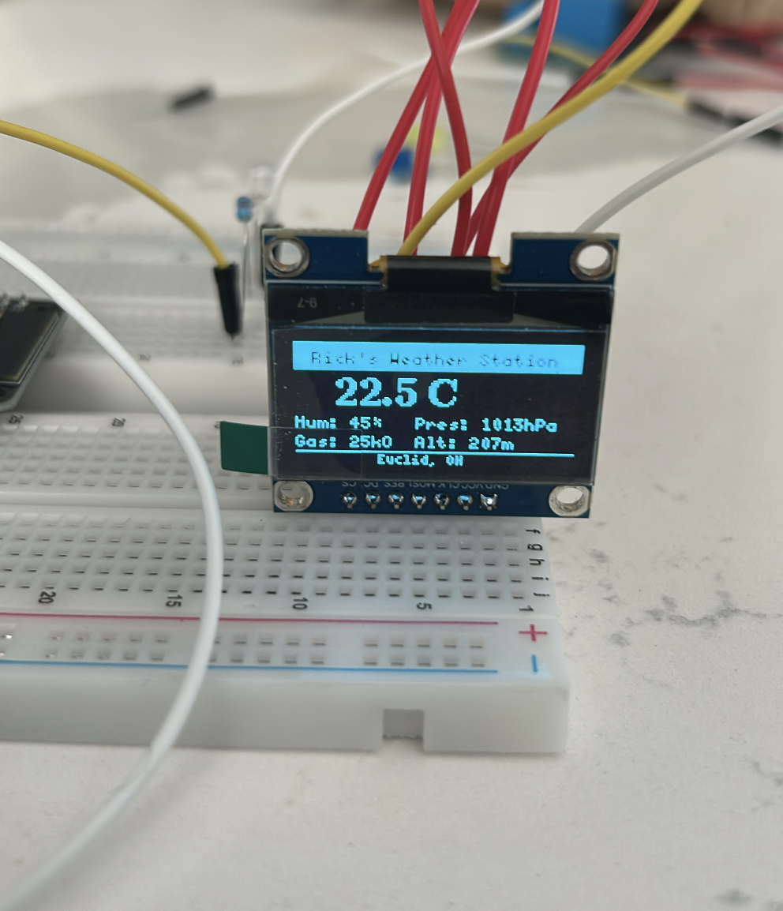

How to build a Weather Station with Temperature Display?
A Practical Tutorial for ESP32-C with SH1106 OLED, BME680, and 3 LED Bulbs
In this tutorial, I share how to build Rick’s Weather Station using an ESP32-C development board, a SH1106 OLED display, a BME680 environmental sensor, and three LED bulbs.
The project displays the temperature first, then a smiley face, then the text Rick’s Weather Station, followed by three LED bulbs flashing in sequence.
For hardware and software, you will need the prerequisite components. Most of these can be bought online or from a local electronics store.
Many modern components are based on this such as Casio Watches. This reminded me of Casio Watches. In my middle school, I used to wear them. Salute to Japanese entrepreneurship and how they were able to build an elegant watch. The reason, why I brought this up is because, Casio Watch F91 is built on the same principles.

1 Objective
- To display temperature using an ESP32 and BME680 sensor
- To show a smiley face on the OLED display
- To display the title Rick’s Weather Station on screen
- To flash three LED bulbs using GPIO pins on the ESP32
2 Components required
- ESP32-C Dev-Board
- Breadboard
- Jumper Cables
- USB-C Cable
- Inland IIC SPI 1.3” 128x64 OLED V2.0 Graphic Display Module
- Adafruit BME680 Sensor
- 3 LED bulbs
- 3 resistors (220Ω recommended)
- Arduino IDE
- Required Arduino libraries
3 Hiccups:
In implementing this project, there were hiccups. I had Adafruit ST7735R LCD display with MicroSD Card Breakout. The goal was for me to read the temperature reading, store them in MicroSD card. This was the goal, and then implement a few Machine Learning algorithms on this reading.
Unfortunately, the ST7735R would not connect properly with the breadboard. it had no header pins, so I either needed to solder them on or use jumper wires inserted directly into the holes. Soldering for a simple project is out of reach, so I decided to go with Inland IIC SPI 1.3” 128x64 OLED V2.0 Graphic Display Module.
I am reminded of how embedded systems make computing visible and physical. Unlike software alone, microcontrollers allow us to connect code directly to the real world through displays, sensors, and electrical outputs. That is one of the beautiful things in engineering: abstract logic becomes something you can see, measure, and interact with.
In my earlier tutorial, I covered this background information. However, since some readers may only refer to this tutorial, so I’ll go over it again for clarity.
My recommendation is to always use technical textbooks, datasheets, and official documentation when learning a new domain. Many blogs simplify the process, which is useful in the beginning, but the deeper understanding often comes from original technical sources. That habit matters because, as an engineer or scientist, you will repeatedly enter unfamiliar technical areas and need to become comfortable reading original material.
4 Conceptual background
4.1 Micro-controller
A microcontroller is a complete computer on a single chip.
For definition, we refer to Paul Scherz and Simon Monk’s Practical Electronics for Inventors. In Chapter 13, Micro-controllers, the authors state:
“The microcontroller is essentially a computer on a chip. It contains a processing unit,
ROM, RAM, serial communications ports, ADCs, and so on. In essence, a microcontroller is a computer,
but without the monitor, keyboard, and mouse. These devices are called microcontrollers.”
For this tutorial, we use an ESP32 dev-kit with Type-C. ESP32 is an accessible microcontroller with built-in Wi-Fi and Bluetooth, and it is highly suitable for sensor-based embedded projects.
4.2 OLED Display
An OLED display is a compact screen used to show text, symbols, or graphics directly from a microcontroller. In this tutorial, we use a Inland IIC SPI 1.3” 128x64 OLED V2.0 Graphic Display Module with SPI communication. The display allows us to show temperature, a smiley face, and the project title in sequence.
Unlike ordinary LEDs, the OLED is a programmable visual output device. This makes it useful for building embedded products that need a user interface.
4.3 BME680 Sensor
The BME680 is a 4-in-1 environmental sensor. It can measure:
- Temperature
- Humidity
- Pressure
- Gas resistance
For this tutorial, we mainly use it to read temperature.
Definition: A MEMS environmental sensor capable of measuring gas, humidity, pressure, and temperature in a compact package.
4.4 LED Bulbs
LED stands for Light Emitting Diode. It is a semiconductor device that emits light when electrical current flows through it in the correct direction.
In this tutorial, we use three LEDs connected to different ESP32 GPIO pins. These LEDs flash after the display sequence completes, giving the project a more animated and interactive feel.
Each LED should have its own resistor to limit current and protect both the LED and the microcontroller pin.
4.5 Breadboard
US Patent D228136 (1971) by Ronald J. Portugal (E&L Instruments)
The founding patent of the modern solderless breadboard.
Definition: A reusable construction base for prototyping electronic circuits without soldering. The breadboard allows us to connect the ESP32, display, sensor, and LEDs quickly during testing and development.
4.6 Jumper Cables
Definition: An electrical wire with a connector or pin at each end used to interconnect components on a breadboard or prototype circuit, without soldering. Also called Dupont wires.
Variants include:
- Male-to-Male
- Male-to-Female
- Female-to-Female
4.7 USB-C Cable
Standard: USB-IF Type-C Specification 1.0 (August 2014), later adopted in IEC 62680-1-3.
Definition: A 24-pin, fully reversible connector and cable standard used for power and data. In this project, the USB-C cable powers the ESP32 and allows code upload from the laptop.
4.8 Arduino IDE
Definition: A cross-platform Integrated Development Environment used for writing, compiling, and uploading code to microcontrollers. Programs are commonly called sketches and use .ino file extension.
For this tutorial, Arduino IDE is used to upload the code to the ESP32.
5 Hardware Setup
Below is the hardware setup for Rick’s Weather Station.
5.1 LED wiring setup

5.2 Additional LED connection view

5.3 SPI OLED display setup

5.4 Final assembled hardware

5.5 Temperature output on the OLED

6 Software Installation
6.1 Step 1: Install Arduino IDE
Download and install the Arduino IDE on your laptop.
6.2 Step 2: Add ESP32 board support
Open Arduino IDE and go to:
Arduino IDE -> Settings -> Additional Boards Manager URLs
Add this URL:
https://espressif.github.io/arduino-esp32/package_esp32_index.jsonThen go to:
Tools -> Board -> Boards Manager
Search for:
esp32Install the ESP32 by Espressif Systems package.
6.3 Step 3: Select your board
Go to:
Tools -> Board
Choose the correct ESP32 development board. For most ESP32 Type-C dev boards, this is usually:
ESP32 Dev Module6.4 Step 4: Select the correct port
Connect the ESP32 to your laptop using USB-C. Then go to:
Tools -> Port
Select the port associated with your ESP32.
6.5 Step 5: Install required libraries
In Arduino IDE, go to:
Sketch -> Include Library -> Manage Libraries
Install these libraries:
U8g2Adafruit BME680Adafruit Unified Sensor
7 Wiring the Circuit
- Setup the breadboard
- Fix the ESP32 dev board to the middle communication lane of the breadboard
- Connect the ESP32 USB-C to your laptop
- Connect the OLED display to the ESP32 using SPI pins
- Connect the BME680 to the ESP32 using I²C pins
- Connect three LEDs to separate GPIO pins with resistors
- Install required libraries in Arduino IDE
8 Pin configuration used in this project
8.1 Inland IIC SPI 1.3” 128x64 OLED V2.0 Graphic Display Module (SPI)
- VCC -> 3V3
- GND -> GND
- CLK -> GPIO18
- MOSI -> GPIO23
- RES -> GPIO4
- DC -> GPIO12
- CS -> GPIO5
8.2 BME680 Sensor (I²C)
- VIN / VCC -> 3V3
- GND -> GND
- SDA -> GPIO21
- SCL -> GPIO22
8.3 LEDs
- Red LED -> GPIO26
- Yellow LED -> GPIO25
- White LED -> GPIO2
Each LED must have its own resistor in series.
9 ASCII schematic
9.1 Inland IIC SPI 1.3” 128x64 OLED V2.0 Graphic Display Module
ESP32 Dev Board Inland (SPI)
----------------------------------------------------
3V3 ---------------------> VCC
GND ---------------------> GND
GPIO18 ---------------------> CLK
GPIO23 ---------------------> MOSI
GPIO4 ---------------------> RES
GPIO12 ---------------------> DC
GPIO5 ---------------------> CS9.2 BME680 (I2C)
ESP32 Dev Board BME680
----------------------------------------------------
3V3 ---------------------> VIN / VCC
GND ---------------------> GND
GPIO21 ---------------------> SDA
GPIO22 ---------------------> SCL9.3 LEDs
ESP32 Dev Board LEDs
----------------------------------------------------
GPIO26 ---- resistor -----> Red LED anode
GPIO25 ---- resistor -----> Yellow LED anode
GPIO2 ---- resistor -----> White LED anode
GND -------------------> All LED cathodes10 Uploading the Test Code
Before running the full project, test the ESP32 serial monitor first.
void setup() {
Serial.begin(115200);
delay(500);
Serial.println("Hello ESP32");
}
void loop() {
Serial.println("tick");
delay(1000);
}10.1 How to test it
- Open Arduino IDE
- Paste the code above
- Click Verify
- Click Upload
- Open Serial Monitor
- Set baud rate to
115200
You should see output like:
Hello ESP32
tick
tick
tickOnce this works, upload the complete Weather Station code below.
11 Full Project Code
#include <Arduino.h>
#include <U8g2lib.h>
#include <Wire.h>
#include <Adafruit_BME680.h>
#define YELLOW_LED 25
#define RED_LED 26
#define WHITE_LED 2
// Inland IIC SPI 1.3" 128x64 OLED V2.0 Graphic Display Module SPI wiring
// CLK = 18, MOSI = 23, CS = 5, DC = 12, RES = 4
U8G2_SH1106_128X64_NONAME_F_4W_HW_SPI u8g2(
U8G2_R0,
/* cs=*/ 5,
/* dc=*/ 12,
/* reset=*/ 4
);
Adafruit_BME680 bme;
void drawTemperature(float tempC) {
u8g2.clearBuffer();
u8g2.setFont(u8g2_font_ncenB08_tr);
u8g2.drawStr(10, 15, "Temperature");
char tempStr[20];
snprintf(tempStr, sizeof(tempStr), "%.2f C", tempC);
u8g2.setFont(u8g2_font_logisoso20_tr);
u8g2.drawStr(10, 45, tempStr);
u8g2.sendBuffer();
}
void drawSmiley() {
u8g2.clearBuffer();
// Face outline
u8g2.drawCircle(64, 32, 22);
// Eyes
u8g2.drawDisc(56, 26, 2);
u8g2.drawDisc(72, 26, 2);
// Smile
u8g2.drawArc(64, 34, 10, 8, 200, 340);
u8g2.sendBuffer();
}
void drawTitle() {
u8g2.clearBuffer();
u8g2.setFont(u8g2_font_ncenB08_tr);
u8g2.drawStr(10, 22, "Rick's Weather");
u8g2.drawStr(28, 42, "Station");
u8g2.sendBuffer();
}
void flashLEDs() {
for (int i = 0; i < 3; i++) {
digitalWrite(RED_LED, HIGH);
digitalWrite(YELLOW_LED, LOW);
digitalWrite(WHITE_LED, LOW);
delay(300);
digitalWrite(RED_LED, LOW);
digitalWrite(YELLOW_LED, HIGH);
digitalWrite(WHITE_LED, LOW);
delay(300);
digitalWrite(RED_LED, LOW);
digitalWrite(YELLOW_LED, LOW);
digitalWrite(WHITE_LED, HIGH);
delay(300);
}
digitalWrite(RED_LED, LOW);
digitalWrite(YELLOW_LED, LOW);
digitalWrite(WHITE_LED, LOW);
}
void setup() {
Serial.begin(115200);
delay(500);
Serial.println("Rick's Weather Station Starting...");
pinMode(RED_LED, OUTPUT);
pinMode(YELLOW_LED, OUTPUT);
pinMode(WHITE_LED, OUTPUT);
digitalWrite(RED_LED, LOW);
digitalWrite(YELLOW_LED, LOW);
digitalWrite(WHITE_LED, LOW);
u8g2.begin();
Wire.begin(21, 22);
if (!bme.begin(0x77)) {
Serial.println("Could not find BME680 sensor!");
while (1);
}
bme.setTemperatureOversampling(BME680_OS_8X);
bme.setHumidityOversampling(BME680_OS_2X);
bme.setPressureOversampling(BME680_OS_4X);
bme.setIIRFilterSize(BME680_FILTER_SIZE_3);
Serial.println("BME680 initialized successfully.");
}
void loop() {
if (!bme.performReading()) {
Serial.println("Failed to read from BME680");
delay(1000);
return;
}
float temperatureC = bme.temperature;
Serial.print("Temperature: ");
Serial.print(temperatureC);
Serial.println(" C");
// Step 1: Display temperature
drawTemperature(temperatureC);
delay(2000);
// Step 2: Show smiley
drawSmiley();
delay(1500);
// Step 3: Show title
drawTitle();
delay(2000);
// Step 4: Flash LEDs
flashLEDs();
delay(1000);
}12 How to upload the full code
- Open Arduino IDE
- Create a new sketch
- Paste the full code above
- Select the correct ESP32 board
- Select the correct COM/USB port
- Click Verify
- Click Upload
- Open Serial Monitor at baud rate
115200
13 How the sequence works
The logic of the project is straightforward.
First, the ESP32 reads the temperature from the BME680 sensor. That value is then displayed on the OLED screen.
Next, the display clears and a smiley face is drawn using simple graphical primitives such as circles and arcs. After that, the title Rick’s Weather Station is displayed.
Finally, the ESP32 activates the three LED bulbs one by one in a flashing sequence. Once this sequence is complete, the program loops back and repeats the process.
This is a good example of how a microcontroller can coordinate sensor input, graphical output, and electrical output together in one embedded system.
14 Expected Serial Output
Rick's Weather Station Starting...
BME680 initialized successfully.
Temperature: 23.56 C
Temperature: 23.58 C
Temperature: 23.61 C15 Expected On-Screen Behavior
- Temperature appears on OLED
- Smiley face appears
- “Rick’s Weather Station” appears
- Red, Yellow, and White LEDs flash one after another
- Sequence repeats continuously
16 Troubleshooting
16.1 OLED not displaying anything
- Check VCC and GND
- Confirm SPI pins are connected correctly
- Make sure CS, DC, and RES pins match the code
- Verify the OLED library is installed
16.2 BME680 not detected
- Check SDA and SCL wiring
- Confirm the sensor uses address
0x77 - Ensure power and ground are connected correctly
- Re-check the I²C pins in
Wire.begin(21, 22)
16.3 LEDs not blinking
- Make sure each LED has the correct polarity
- Confirm each LED has its own resistor
- Verify the GPIO pin numbers match the wiring
- Check that the cathode side goes to ground
16.4 Code not uploading
- Make sure the correct board is selected
- Make sure the correct port is selected
- Try pressing and holding the BOOT button while upload begins, if your board requires it
- Check that the USB cable supports data, not only charging
17 Conclusion
This project shows how to build a small but expressive embedded system using an ESP32. By combining a temperature sensor, an OLED display, and three LEDs, we can create a weather station that is both functional and visually engaging.
The project is useful because it teaches multiple foundational ideas at once: how to read sensors, how to display information, how to control output pins, and how to coordinate everything through code.
This is how embedded systems become real: not only through theory, but through wiring, testing, debugging, and watching code come alive in hardware.
18 Demo Video
Below is the demonstration video showing the full sequence: temperature display, smiley face, Rick’s Weather Station text, and LED flashing.
19 Engineering Reflection: Real-World Products Built similiar to this Architecture
The same engineering pattern used in this tutorial, an environmental sensor, a small display, and LED status indicators — powers several commercial products on the market today:
- Casio Pro Trek PRG-650: Barometric pressure, temperature, altitude, compass, and a small display with LED backlight. A wristwatch built on the same sensor-display-indicator architecture as this project.
- Bosch BME688 Development Kit: Bosch’s own evaluation board for their BME688 sensor, featuring a small display, LED indicators, and environmental readouts, essentially a commercial version of this exact circuit.
- Airthings Wave Plus: A wall-mounted air quality monitor with a multi-environmental sensor, OLED-style readout, and a color LED ring that changes based on air quality — a direct consumer equivalent of this build.
- Awair Element: A desktop air quality monitor combining a small display, five environmental sensors, and LED dot indicators. A professionally packaged version of the same sensor-display-LED concept.
- Govee Air Quality Monitor H5106: A compact OLED screen showing live temperature, humidity, and AQI readings with colored LED status alerts